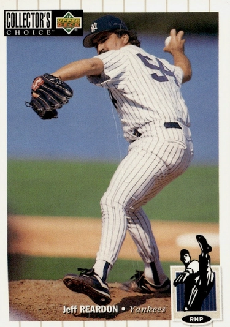

Jeff Reardon "The Terminator"
Career Highlights & Facts
(Facts are AI-generated and may require verification)
- Became MLB's all-time saves leader in 1992, finishing with 367 career saves.
- Was the first pitcher to record 40-save seasons in both the American and National Leagues.
- Won a World Series championship with the 1987 Minnesota Twins.
Would you like to find out more about Jeff Reardon?
Career Totals
| WAR | W | L | ERA | G | GS | SV | IP | SO | WHIP |
|---|---|---|---|---|---|---|---|---|---|
| 18.6 | 73 | 77 | 3.16 | 880 | 0 | 367 | 1132.1 | 877 | 1.199 |
Statistics via Baseball-Reference.com
The Original Clue